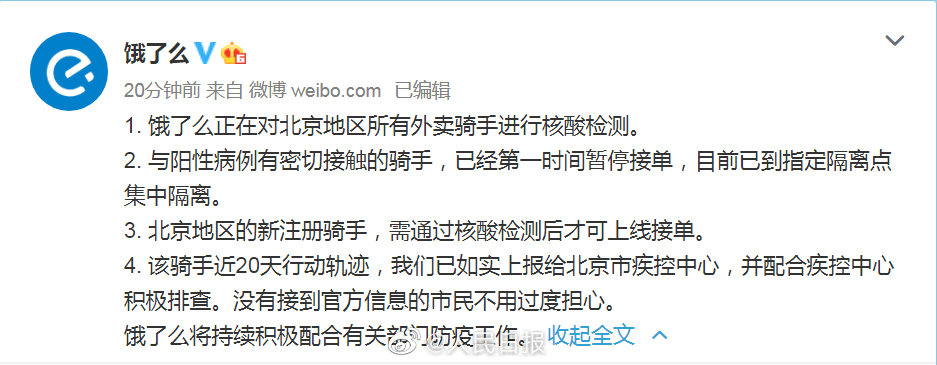

也是外省户籍吧？@人民日报:【北京#与确诊外卖员密接骑手已暂停接单#】 @饿了么 回应#北京一外卖员确诊平均每天接50单#：1. 饿了么正在对北京地区所有外卖骑手进行核酸检测。2. 与阳性病例有密切接触的骑手，已经第一时间暂停接单，目前已到指定隔离点集中隔离。3. 北京地区的新注册骑手，需通过核酸检测后才可上线接单。 4. 该骑手近20天行动轨迹，我们已如实上报给北京市疾控中心，并配合疾控中心积极排查。没有接到官方信息的市民不用过度担心。